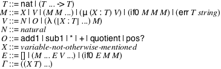
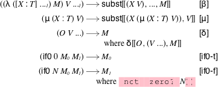
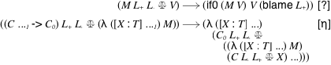
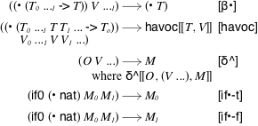
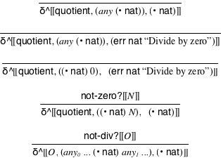
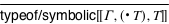
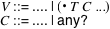

PCF with Contracts and Symbolic Values
David Van Horn <dvanhorn@ccs.neu.edu>
1 Overview
This package contains a collection of modules for exploring and experimenting with (variations on) a core typed functional language based on Plotkin’s PCF.
PCF: a core typed language (with natural numbers, errors and recursion).
Symbolic PCF (’PCF): an extension of PCF endowed with a notion of "symbolic values", written (• T), which represents an abstraction of all values of type T.
Contract PCF (CPCF): an extension of PCF endowed with behavioral software contracts. Contracts include arbitrary predicates written in PCF and higher-order contracts, written (C ... -> C). The monitor of a contract against a computation is written (C ⚖ M). When a contract fails, blame is signalled and indicates who is to blame.
Symbolic CPCF (’CPCF): an extension of Contract PCF endowed with symbolic values written (• T C ...), which represents an abstraction of all values of type T satisfying contracts C ....
2 PCF
2.1 Language
| #lang pcf |
PCF is a core typed call-by-value functional programming language.
PCF = M ... M = X | V | (M M ...) | (if0 M M M) | (err T string) V = natural | O | (λ ([X : T] ...) M) O = add1 | sub1 | * | + | quotient | pos? T = nat | (T ... -> T)
> 5 5
> (λ ([x : nat]) x) '(λ ((x : nat)) x)
> ((λ ([x : nat]) x) 5) 5
> (if0 1 2 3) 3
> (if0 0 (add1 2) 8) 3
> (add1 add1) eval:7:0: type-error: ill-typed expression
in: (add1 add1)
> (quotient 5 0) '(err nat "Divide by zero")
2.2 Model
| (require pcf/redex) |
language

Figure 2: The PCF language
value

Figure 3: Reduction relation v
value
Contextual closure of v over evaluation contexts.
judgment-form
Figure 4: Primitive application δ
judgment form
Figure 5: Typing judgment typeof
procedure
(typable? m) → boolean?
m : (redex-match PCF M)
3 CPCF
3.1 Language
M = .... | (C ⚖ M) C = M | (C ... -> C)
> ((λ ([x : nat]) x) ⚖ 3) '(blame eval:2:0)
> ((λ ([x : nat]) x) ⚖ 0) 0
> (((λ ([x : nat]) x) -> (λ ([x : nat]) x)) ⚖ (λ ([x : nat]) x))
'(λ ((x : nat))
((λ ((x : nat)) x) ⚖ ((λ ((x : nat)) x) ((λ ((x : nat)) x) ⚖ x))))
> ((((λ ([x : nat]) x) -> (λ ([x : nat]) x)) ⚖ (λ ([x : nat]) x)) 0) 0
> ((((λ ([x : nat]) x) -> (λ ([x : nat]) 1)) ⚖ (λ ([x : nat]) x)) 0) '(blame eval:6:0)
> ((((λ ([x : nat]) 1) -> (λ ([x : nat]) x)) ⚖ (λ ([x : nat]) x)) 0) '((λ ((x : nat)) x) ⚖ ((λ ((x : nat)) x) (blame eval:7:0)))
3.2 Model
| (require cpcf/redex) |
language
language
Figure 7: The CPCF-source and CPCF languages
value

Figure 8: Reduction relation cv
value
Contextual closure of cv over evaluation contexts.
judgment form
Figure 9: Typing judgment typeof/contract
procedure
(typable/contract? m) → boolean?
m : (redex-match CPCF M)
4 SPCF
4.1 Language
V = .... | (• T)
> (if0 (• nat) 1 2)
1
2
> (add1 (if0 (• nat) 1 2))
2
3
> (add1 (if0 (• nat) 1 (• nat)))
'(• nat)
2
> ((λ ([x : nat]) 1) 2) 1
> ((λ ([f : (nat -> nat)]) (f (f 5))) (λ ([n : nat]) (quotient 625 n))) 5
> ((• ((nat -> nat) -> nat)) (λ ([n : nat]) (quotient 625 n)))
'(err nat "Divide by zero")
'(• nat)
> ((λ ([f : (nat -> nat)]) (f (f 5))) (• (nat -> nat)))
'(• nat)
5
4.2 Model
| (require spcf/redex) |
language
Figure 11: The SPCF language
value

Figure 12: Reduction relation sv
value
Contextual closure of sv over evaluation contexts.
judgment-form

Figure 14: Abstract primitive application δ^
judgment form

Figure 15: Typing judgment typeof/symbolic
procedure
(typable/symbolic? m) → boolean?
m : (redex-match SPCF M)
5 SCPCF
5.1 Language
M = .... | (C ⚖ M) V = .... | (• T C ...) C = .... | M | (C ... -> C)
> (add1 (• nat pos?)) '(• nat)
> ((• ((nat -> nat) -> nat)) (λ ([n : nat]) (quotient 625 n)))
'(err nat "Divide by zero")
'(• nat)
> ((• ((nat -> nat) -> nat)) ((pos? -> (λ ([x : nat]) 0)) ⚖ (λ ([n : nat]) (quotient 625 n))))
'((• ((nat -> nat) -> nat))
((pos? -> (λ ((x : nat)) 0)) ⚖ (λ ((n : nat)) (quotient 625 n))))
5.2 Model
| (require scpcf/redex) |
language

Figure 17: The SCPCF language
Contextual closure of scv over evaluation contexts.
judgment form
Figure 18: Typing judgment typeof/contract/symbolic
procedure
(typable/contract/symbolic? m) → boolean?
m : (redex-match SCPCF M)